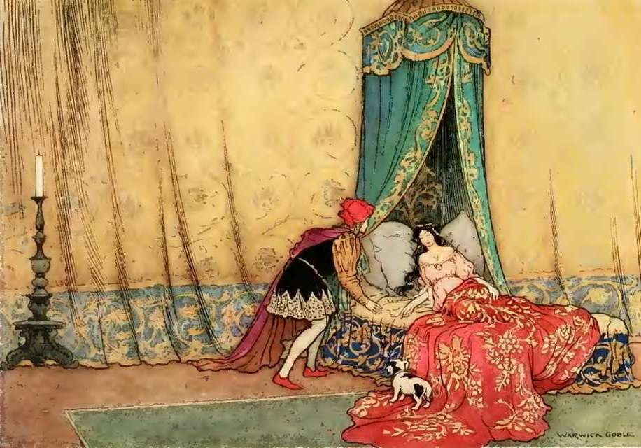
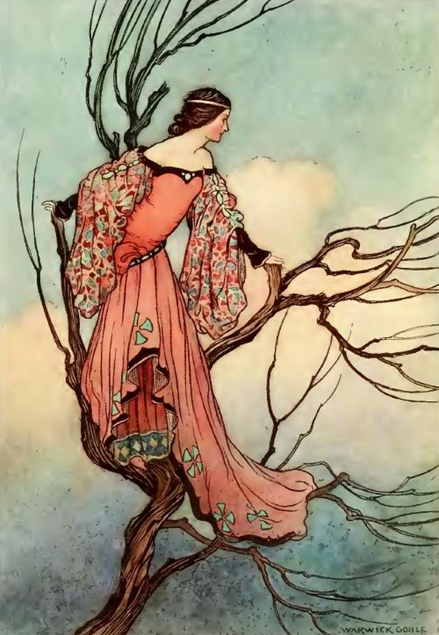

The Enemy Outside

Refers to theories based on figures alleged to be scheming against a
community from without
-
Sleeping Beauty -
Maleficent, clearly an outsider to the kingdom attempts to
overthrow it.
-
Pied Piper of Hamelin
- The piper lead away all the children in the community after the
mayor failed to pay him.
-
The Elves and the Shoemaker
- A humble shoemaker grows dependent on a pair of visiting elves.
What will happen if they take over the town's economy?
The Enemy Within
Finds the conspirators lurking inside the nation, indistinguishable
from ordinary citizens
-
Cinderella - A
step-mother attempts to marry one of her daughters to the prince
thus gaining entry to the aristocracy.
-
Sing a Song of Six Pence
- Blackbirds in pies, could this be where Alfred Hitchcock got the
idea to film
The Birds
or is this simply a way for the castle cooks to subvert the
kingdom happenings?
The Enemy Above

Involves powerful people manipulating events for their own gain.
-
The Iron Stove - A
king manipulates events to keep his daughtetr from marrying a
prince. Did he also set up the cottage of toads and frogs?
-
The Woodcutter's Daughter
- A king attempts to kidnap a young girl.
-
Beauty and the Beast
- Powerful forces work to keep a prince locked up in a castle.
-
Rapunzel
- Who better than to direct the workings of the land down below
than a princess living high above in a tower.
-
Henny Penny
- In this tale, brave Henny Penny goes up against the sky who
attempts to kill her. But why? What secrets has Henny Penny
learned that make her so dangerous?
The Enemy Below
Features the lower classes working to overturn the social order.
-
Rumpelstiltskin
- By taking children from the king and queen, Rumplestilkskin
would have thrown doubt on the line of succession. Was this his
plan or would someone else stand to gain even more?
-
Jack and the Beanstalk
- Cutting down the beanstalk was only the first step. Soon, Jack
would go after other giants in effort to undo the exisiting social
order.
-
Pinocchio -
Granting the wish of a humble carpenter or raising an army of
inanimate objects to overthrow the land?
-
Gingerbread man -
Run run as fast as you can, what idealogy did the Gingerbread man
spread before the fox put an end to his revolution?
-
The Little Mermaid
- A mermaid literally comes up from the depths of the ocean in
order to kill the prince and let his blood drip on her feet.
-
The Emperors New Clothes
- Fooled into believing he is being helped, taylors work to
gaslight the aristocracy.
Benevolent Conspiracies
Angelic forces that work behind the scenes to improve the world and
help people.
-
Cinderella - Was
Cinderella's Fairy Godmother truely kind or was she attempting to
work her way into the aristocracy as well?